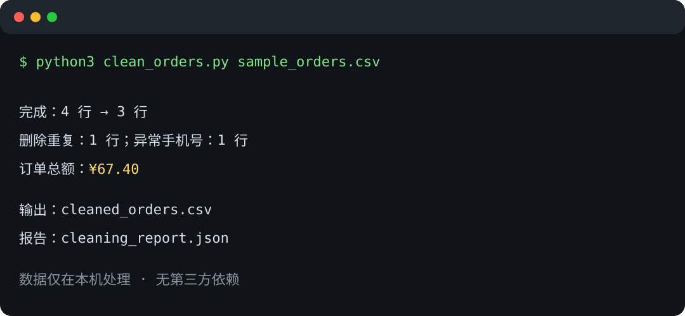

解决一个具体问题，不订阅、不上传业务数据。所有商品均包含源码、说明、测试和版本化下载包。
店铺订单净化器
把淘宝、拼多多、抖店等平台导出的混乱 CSV，一键变成可直接交给 Excel、财务和运营报表的标准订单表。
订单号去重
避免重复导出导致订单量和销售额虚高，并在报告中记录删除数量。
中文字段自动识别
兼容常见订单号、收货人、手机号、金额、状态和时间列名。
Excel 友好
识别 UTF-8 与 GB18030，统一输出 Excel 可直接打开的 UTF-8 CSV。
数据质量报告
输出订单总额、状态分布、异常手机号和清洗前后行数。
真实终端演示

交付内容
- 完整 Python 源码，无第三方依赖
- 中文使用说明和复制即用命令
- 示例订单、清洗结果和 JSON 报告
- 自动化测试与可扩展字段别名
- 版本化 ZIP 下载包
运行要求
Windows、macOS 或 Linux，安装 Python 3.10 以上即可。订单和手机号全程留在本机。
Git Handoff Checker
交付代码前，一条命令检查遗漏文件、游离 HEAD、未推送 commit、缺失 upstream 和落后远端的分支，并生成可发给客户的证据报告。
交付前失败关闭
任何检查失败即返回非零退出码，可直接放进 CI 或交付脚本。
三种报告格式
终端文本用于人工检查，JSON 用于自动化，Markdown 用于客户验收记录。
完全本地运行
无第三方依赖，不读取业务源码内容，也不上传仓库数据。
经过自动测试
覆盖干净仓库、脏工作区、缺失 upstream、非 Git 目录和报告生成。

两个工具组合包：¥79 / USD 12
同时购买店铺订单净化器和 Git Handoff Checker，比单独购买节省 ¥29 / USD 4。适合既处理运营数据又需要交付自动化脚本的小型团队。
Git 仓库交付体检报告
不想自己运行工具？提交一个公开 Git 仓库和目标分支，我会交付一份可核验的 Markdown 体检报告：分支与 upstream、未推送风险、仓库整洁度、README/许可证/测试入口、发布包完整性及明确整改清单。
明确边界
仅检查客户主动提供的公开仓库；不索取凭据，不访问私有代码，不执行未知项目脚本。
真实交付物
交付带时间、commit SHA、检查证据和优先级整改清单的 Markdown 报告。
一次复检
客户完成整改后，可在七天内对同一分支免费复检一次。